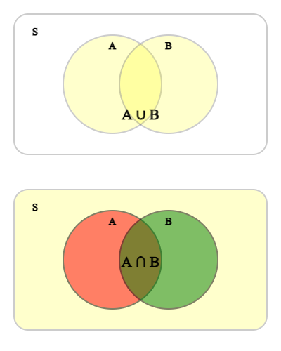
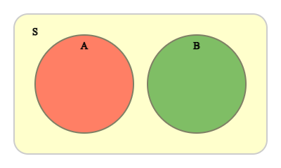
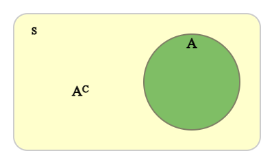
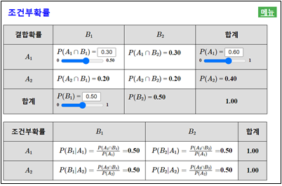

⭐ 생각열기
● 동전을 던지면 겉면 또는 뒷면이 나타난다.● 한 공장에서 제품을 생산하여 검사면 우량품이든지 아니면 불량품이다.
확률은 한 사건이 일어날 가능성을 0에서 1사이의 값으로 수치화 한 것이다. 여러 가지 상황에 대한 확률을 계산하여 의사 결정이나 미래 예측에 많이 이용한다.
우리 주변에는 동전을 던진다든지 제품을 검사한다든지 유사한 일이 반복되는 경우가 많다. 이러한 일들의 가능한 결과는 ‘겉면’ 또는 ‘뒷면’이든지 ‘우량품’ 또는 ‘불량품’이 되는 것은 알지만 무슨 결과나 될지는 모른다. 이와 같이 비슷한 일이 반복되고 모든 가능한 결과들은 알지만 한 결과가 우연에 의하여 결정되는 실험이나 관찰을 통계적 시행이라고 한다.
한 시행에서 일어날 수 있는 모든 가능한 결과들의 집합을 표본공간이라고 하고 이 표본공간의 부분집합을 사건이라 부른다. 또 한 개의 원소로 이루어진 사건을 근원사건이라고 한다.
표본공간은 대개 \(S\)로 표시하고 사건은 영어 대문자 \(A, B, C, ...\) 등으로 표시한다. 예를 들어 동전을 던지는 시행에서 ‘앞면’을 H, 뒷면을 T라 할 때 표본공간은
이고 던진 결과가 ‘겉면’ 또는 ‘뒷면’인 사건을
로 표시한다.
2) 홀수의 눈이 나오는 사건은 다음과 같다.
1) 표본공간 \(S\)
2) ‘우량’이 한 개, ‘불량’이 한 개 나오는 사건 \(A\)
2) ‘우량’이 한 개, ‘불량’이 한 개 나오는 사건 \(A\)는 다음과 같다.
표본공간 \(S\)의 두 사건 \(A\)와 \(B\)에 대하여 \(A\)또는 \(B\)가 일어나는 사건을 \(A \cup B\)로 나타내고, \(A\)와 \(B\)가 동시에 일어나는 사건을 \(A \cap B\)와 같이 나타낸다.

특히 사건 \(A\)와 \(B\)가 동시에 일어나지 않을 때, 즉 \(A \cap B\)= ø 일 때, 이 두 사건을 서로 배반사건이라고 한다.

어떤 사건 \(A\)에 대하여 사건 \(A\)가 일어나지 않는 사건을 \(A\)의 여사건이라고 하고, 이 사건을 \(A^C\)로 나타낸다. \(A\)와 \(A^C\)는 동시에 일어날 수 없으므로 \(A \cap A^C\)= ø이고 사건 \(A\)와 \(A^C\)는 서로 배반사건이다.

1) \(A \cup B\) = {1, 2, 3, 5}
2) \(A \cap B\) = {1, 3}
3) \(A^C\) = {2, 4, 6}
이다.
실제로 동전을 10번, 50번, 100번 던져 앞면이 나오는 횟수를 적어 상대도수를 구해본 예가 다음과 같다.
| 동정을 던진 횟수(\(n\)) | 10 | 50 | 100 |
|---|---|---|---|
| 앞면이 나온 횟수(\(x\)) | 4 | 23 | 51 |
| 상대도수(\(\frac{x}{n}\)) | 0.40 | 0.46 | 0.51 |
동전을 던진 횟수가 적을 때는 앞면이 나오는 횟수의 상대도수는 0.5가 아닐 수 있다. 하지만 동전을 던진 횟수가 점차 늘어나면 상대도수는 0.5에 가까워진다. 컴퓨터를 이용하여 동전 던지는 횟수를 더욱 많이 실험하여 보면 상대도수가 <그림 2.4>와 같이 점차 0.5에 가까워짐을 알 수 있다. 이를 동전의 앞면이 나오는 사건의 통계적 확률이라 한다.
『eStatH』 메뉴에서 ‘통계적 확률’을 선택하면 <그림 2.4>와 같은 그래프 창이 나타난다. 여기에서 \(n\)을 10000으로 입력한 후 [실행]버튼을 클릭하면 동전던지기 시행이 1 만회 실시되어 동전의 앞면이 나온 횟수의 상대도수를 관찰 할 수 있다.
[Statistical Probability]
주사위를 잘 만들었다면 한번 던졌을 때 1의 눈이 나올 확률이 \(\frac{1}{6}\)일 것 같다. 주사위를 12번, 36번, 120번 던져서 실제로 \(\frac{1}{6}\)인지 확인해 보자.
일반적으로 사건 \(A\)의 확률이란 사건 \(A\)가 나올 가능성을 0과 1사이의 수치로 표현한 것으로 \(P(A)\)로 표시한다. \(P(A)\)의 한 가지 정의방법으로 시행을 \(n\)번 반복하였을 때 사건 \(A\)가 일어난 횟수를 \(n_A\)라고 하자. 시행 횟수 \(n\)이 충분히 커짐에 따라 상대도수 \(\frac{n_A}{n}\)가 일정한 값 \(p\)에 가까워지면 이 값 \(p\)를 사건 \(A\)의 통계적 확률이라고 하고 \(P(A) = \frac{n_A}{n}\)로 표시한다.
✨ 통계적 확률
일반적으로 어떤 시행을 \(n\)번 반복하였을 때 사건 \(A\)가 일어난 횟수를 \(n_A\)라고 하자. 시행 횟수 \(n\)이 충분히 커짐에 따라 상대도수 \(\frac{n_A}{n}\)가 일정한 값 \(p\)에 가까워지면 이 값 \(p\)를 사건 \(A\)의 통계적 확률이라고 하고 \(P(A) = \frac{n_A}{n}\)로 표시한다.
| 연령대 | 인구수(2020년) | 상대도수 |
|---|---|---|
| 0-14세 | 630만명 | 0.124 |
| 15-64세 | 3736만명 | 0.736 |
| 65세이상 | 707만명 | 0.139 |
| 건강상태 | 상대도수 |
|---|---|
| 전혀 그렇지 않다. | 0.001 |
| 그렇지 않은 편이다 | 0.021 |
| 그런 편이다 | 0.496 |
| 매우 그렇다. | 0.482 |
모든 사건의 확률을 통계적 확률을 이용하여 정의하고 현실 의사결정에 사용하는 것은 쉽지 않다. 확률을 현실 문제에 쉽게 적용하기 위하여 모형에 근거한 수학적 확률이 연구되었다.
주사위를 던졌을 때 나타나는 각각의 눈에 대한 통계적 확률을 구하려면 수많은 시행을 하여야 한다. 시행을 충분히 하여 얻은 통계적 확률은 1/6에 근사하게 될 것이다. 한 사건의 확률을 구하기 위하여 시행을 많이 하는 것은 현실적으로 쉽지 않다.
한 개의 주사위를 던지는 경우 표본 공간은 {1, 2, 3, 4, 5, 6}이 되고 각 표본공간의 원소가 나올 가능성이 같다고 가정하면 각각의 눈이 나올 확률은 1/6이라고 할 수 있다. 표본공간의 원소가 나타날 가능성이 모두 같다는 합리적인 가정 하에 한 사건의 확률을 정의하는 것을 수학적 확률이라 한다. 현실 문제에서 표본공간의 원소들이 나타나는 가능성이 같다고 가정할 수 있을 경우 수학적 확률이 이용된다.
일반적으로 한 시행의 표본공간 \(S\)의 원소가 나타날 가능성이 모두 같다고 가정할 때, 사건 \(A\)가 일어날 수학적 확률 \(P(A)\)는 다음과 같다.
일반적으로 사건 \(A\)의 통계적 확률 \(p\)는 시행의 횟수가 충분히 크면 수학적 확률에 가까워진다.
✨ 수학적 확률
한 시행의 표본공간 \(S\)의 원소가 나타날 가능성이 모두 같다고 가정할 때, 사건 \(A\)가 일어날 수학적 확률 \(P(A)\)는 다음과 같다.
이다. 따라서 표본공간을 \(S\)라고 하면 \(n(S)\)= 120이다.
우량품 2개와 불량품 1개가 나오는 사건을 \(A\)라고 하면
따라서 사건 \(A\)의 확률은 다음과 같다.
표본공간의 각 원소가 일어날 가능성이 같을 때 수학적 확률의 성질을 알아보자. 한 사건 \(A\)는 표본공간 \(S\)의 부분집합이므로 다음이 성립한다.
각 변을 \(n(S)\)로 나누면
이므로 수학적 확률의 정의에 의해
이다.
만일 사건 \(A\)가 표본공간 \(S\)라면
이 된다. 사건 \(A\)가 공집합 ∅ 라면
이다.
✨ 확률의 기본 성질
표본공간의 각 원소가 일어날 가능성이 같을 때
1) 한 사건 \(A\)에 대하여 \(0 \le P(A) \le 1\)
2) 한 사건이 반드시 일어나는 표본공간 \(S\)라면 \(P(S) = 1\)
3) 한 사건이 절대로 일어나지 않는 공집합 ∅ 라면 \(P(∅) = 0\)
\(A\)가 왼쪽에 배치되는 사건은 \(A\)를 제외하고 나머지 3사람을 두 번째, 세 번째, 오른쪽 자리에 배치되는 수이므로 3×2×1 = 3! 이다. 그러므로, A가 제일 왼쪽에 배치될 확률은 다음과 같다.
학생이 축구를 관람한 사건을 \(A\), 배구를 관람한 사건을 \(B\)라 하면 축구 또는 배구를 관람한 사건은 \(A \cup B\)가 된다. 두 사건 \(A\)와 \(B\)에 대하여
이므로 양변을 \(n(S)\)로 나누면
따라서 사건 \(A\) 또는 사건 \(B\)가 일어날 확률 \(P(A \cup B)\)는 다음과 같다.
이를 확률의 덧셈정리라 한다. 위의 예에서는
이다.
만일 두 사건 \(A\)와 \(B\)가 서로 배반사건이면 \(P(A \cap B)\)= 0 이므로
이 된다.
✨ 확률의 덧셈 정리
사건 \(A\) 또는 사건 \(B\)가 일어날 확률 \(P(A \cup B)\)는 다음과 같다.
만일 두 사건 \(A\)와 \(B\)가 서로 배반사건이면 \(P(A \cap B)\)= 0 이므로
풀이
『eStatH』 메뉴에서 ‘확률의 덧셈정리’를 선택하면 <그림 2.5>와 같은 창이 나타난다. 여기에서 \(P(A)\) = 0.6, \(P(B)\) = 0.4, \(P(A \cap B)\) = 0.2를 입력한 후 [실행] 버튼을 클릭하면 확률의 덧셈정리에 대한 그래프를 관찰 할 수 있다. \(P(A)\), \(P(B)\), \(P(A \cap B)\)를 변화시키면서 덧셈 정리를 살펴볼 수 있다.
[Addition Rule of Probability]
한 대학 경영학과 1학년 학생 80명 중 경제학을 수강하는 학생이 50명, 정치학을 듣는 학생이 30명, 두 과목을 모두 수강하는 학생이 20명이었다. 경영학과 1학년 학생 한사람을 만났을 때 이 학생이 경제학 또는 정치학을(즉, 둘 중 한 과목이나 두 과목 모두) 수강할 확률은?
주사위를 던지는 시행의 표본공간은 \(S\) = {1, 2, 3, 4, 5, 6}이고 숫자 1 또는 2가 나오는 사건을 \(A\) = {1, 2}라 하면 나머지 숫자가 나오는 사건은 여사건 \(A^C\) = {3, 4, 5, 6}이다. 사건 \(A\)와 여사건 \(A^C\)는 서로 배반사건이므로 확률의 덧샘정리에 의해
\(P(A \cup A^C ) = P(S) = 1\)이므로
이다.
✨ 여사건의 확률
\(A^C\)를 사건 \(A\)의 여사건이라 할 때
여사건은 자주 '적어도' 또는 '나머지'라는 단어를 포함한다.
이었다. 또 두 개의 불량품이 발견될 확률은
이다. 따라서 적어도 1개의 불량품이 발견될 확률은 \(\frac{3}{5} ＋ \frac{1}{5} = \frac{4}{5} \) 이다.
이 확률을 구하는 다른 방법은 불량품이 하나도 없을 사건(이것을 적어도 1개의 불량품이 발견될 사건의 여사건이라고 함)의 확률을 구한 다음 1 에서 빼 주는 것이다. 즉, 적어도 1개의 불량품이 발견될 확률은 다음과 같다.
이 문제에 대한 표본공간을 남학생인 사건을 \(A\), 여학생인 사건을 \(F\), 안경을 착용한 사건을 \(B\), 착용안한 사건을 \(N\)으로 표시하면 문제에서 주어진 경우의 수는 다음과 같은 표로 정리할 수 있다.
| 안경착용(\(B\)) | 안경착용 안함(\(N\)) | 합계 | |
|---|---|---|---|
| 남학생(\(A\)) | \(n(A \cap B) = 8\) | \(n(A) = 24\) | |
| 여학생(\(F\)) | \(n(F \cap B) = 4\) | \(n(F) = 16\) | |
| 합계 | \(n(S) = 40\) |
이 표를 이용하면 문제에서 주어지지 않은 사건의 수를 쉽게 계산하여 넣을 수 있다.
| 안경착용(\(B\)) | 안경착용 안함(\(N\)) | 합계 | |
|---|---|---|---|
| 남학생(\(A\)) | \(n(A \cap B) = 8\) | \(n(A \cap N) = 16\) | \(n(A) = 24\) |
| 여학생(\(F\)) | \(n(F \cap B) = 4\) | \(n(F \cap N) = 12\) | \(n(F) = 16\) |
| 합계 | \(n(B) = 12\) | \(n(N) = 28\) | \(n(S) = 40\) |
1) 따라서 이 고등학교 학생 중 한명을 임의로 뽑을 때 남학생일 확률은
이다.
2) 한 학생을 임의로 뽑았을 때 이 학생이 남학생이고 안경을 착용했을 확률은
이다.
3) 남학생 중에서 한 명을 임의로 뽑았을 때 이 학생이 안경을 착용했을 확률은 기호로 \(P(B|A)\)로 표시하며 남학생인 사건 \(M\)을 표본공간으로 볼 수 있으므로
이다. \(P(B|A)\)을 남학생 사건 \(A\)가 일어났을 때 안경착용 사건 \(B\)의 조건부확률이라 한다.
한 시행의 표본공간이 \(S\)이고 사건 \(A\)가 일어났을 때 사건 \(B\)의 조건부확률은
이다. 이 식 우변의 분자와 분모를 각각 \(n(S)\)로 나누면
이다.
✨ 조건부 확률
사건 \(A\)가 일어났을 때 사건 \(B\)의 조건부확률은
위의 표에서 두 사건이 동시에 일어날 확률을 정리하면 다음과 같다. 이를 결합확률분포표라 부른다.
| 안경착용(\(B\)) | 안경착용 안함(\(N\)) | 합계 | |
|---|---|---|---|
| 남학생(\(A\)) | \(P(A \cap B) = \frac{8}{40}\) | \(P(A \cap N) = \frac{16}{40}\) | \(P(A) = \frac{24}{40}\) |
| 여학생(\(F\)) | \(P(F \cap B) = \frac{4}{40}\) | \(P(F \cap N) = \frac{12}{40}\) | \(P(F) = \frac{16}{40}\) |
| 합계 | \(P(B) = \frac{12}{40}\) | \(P(N) = \frac{28}{40}\) | \(P(S) = 1\) |
여기서 \(P(A \cap B) = \frac{8}{40}\)은 남학생 확률 \(P(A) = \frac{24}{40}\)에 조건부 확률 \( P(B|A) = \frac{8}{24} \)을 곱하여 구할 수 있다.
이를 확률의 곱셉정리라 한다. 이 사실은 조건부 확률의 정의 \( P(B|A) = \frac{P(A \cap B)}{P(A)} \)에서 양변에 \(P(A)\)를 곱하면
가 성립함을 알 수 있다.
\(P(A \cap B) = \frac{8}{40}\)은 안경착용 확률 \(P(B) = \frac{12}{40}\)에 조건부 확률 \( P(A|B) = \frac{8}{12} \)을 곱하여 구할 수도 있다.
일반적으로 다음과 같은 확률의 곱셈정리가 성립한다.
✨ 확률의 곱셈정리
두 사건 \(A\)와 \(B\)에 대하여 다음의 곱셈정리가 성립한다.
만일 학생들의 안경착용 여부에 대한 표가 다음과 같다고 하자.
| 안경착용(\(B\)) | 안경착용 안함(\(N\)) | 합계 | |
|---|---|---|---|
| 남학생(\(A\)) | \(P(A \cap B) = \frac{12}{40}\) | \(P(A \cap N) = \frac{12}{40}\) | \(P(A) = \frac{24}{40}\) |
| 여학생(\(F\)) | \(P(F \cap B) = \frac{8}{40}\) | \(P(F \cap N) = \frac{8}{40}\) | \(P(F) = \frac{16}{40}\) |
| 합계 | \(P(B) = \frac{20}{40}\) | \(P(N) = \frac{20}{40}\) | \(P(S) = 1\) |
여기서 전체 학생의 안경착용 확률 \(P(B) = \frac{20}{40} = \frac{1}{2}\)은 남학생 중에서 안경착용 확률 \( P(B|A) = \frac{12}{24} = \frac{1}{2} \)과 동일하다. 이와 같이 두 사건 \(A\)와 \(B\)에 대하여 사건 \(A\)가 일어나는 것이 사건 \(B\)가 일어날 확률에 영향을 주지 않은 때, 즉
일 때, 두 사건 \(A\)와 \(B\)는 서로 독립이라고 한다. 한편 두 사건 \(A\)와 \(B\)가 독립이 아닐 때, 두 사건 \(A\)와 \(B\)는 서로 종속이라고 한다.
두 사건 \(A\)와 \(B\)가 서로 독립이면 확률의 곱셈정리에 의하여
가 성립한다. 역으로 \( P(A \cap B) = P(A) × P(B) \) 이고 \(P(A) \ne 0\)이라면
이므로 두 사건 \(A\)와 \(B\)는 서로 독립이다.
✨ 두 사건이 독립일 경우 확률의 곱셈정리
두 사건 \(A\)와 \(B\)가 서로 독립이기 위한 필요충분조건은 다음과 같다.
위의 표에서는 모든 결합확률에 대한 사건들이 서로 독립이다. 이런 경우 두 변수 성별과 안경착용여부가 독립이라고 한다. 표를 살펴보면 전체 학생의 ‘안경착용’과 ‘안경착용 안함’ 사건의 확률이 각각 0.5와 0.5이다. 두 변량이 독립인 경우 이러한 비율이 남학생과 여학생 각각에 대해서도 같이 유지된다.
풀이
『eStatH』 메뉴에서 ‘조건부확률’을 선택하면 <그림 2.6>과 같은 창이 나타난다. 여기에서 결합확률 \(P(A_1 \cap B_1 )\) 를 조정하면 그 밑에 조건부확률을 관찰할 수 있고 그 밑에 <그림 2.7>과 같은 선그래프와 각각의 행에 대한 조건부확률의 막대그래프를 관찰할 수 있다.
[Multiplication Rule of Probability]
만일 결합확률 \(P(A_1 \cap B_1 )\) = 0.30, \(P(A_1 )\) = 0.60으로 <그림 2.8>과 같이 조정하면 <그림 2.9>와 같은 독립인 경우의 조건부확률과 선그래프를 관찰할 수 있다.


한 개의 주사위를 던져서 나온 눈의 수가 홀수인 사건을 \(A\), 3이하인 사건을 \(B\)라 할 때 두 사건이 독립인지 종속인지 살펴보라.
한 대학교 신입생 30명의 남녀별, 출신지역별 분포가 다음과 같다.
| 서울출신(\(S\)) | 지방출신(\(C\)) | 합계 | |
|---|---|---|---|
| 남자(\(M\)) | 10 | 10 | 20 |
| 여지(\(F\)) | 5 | 5 | 10 |
| 합계 | 15 | 15 | 30 |
한 학생을 뽑았을 때 남자일 사건과 서울출신일 사건이 서로 독립인가?